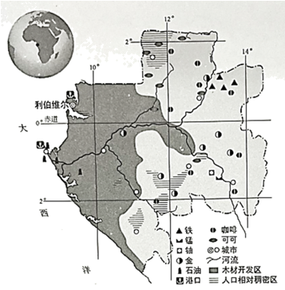

2023年北京中考地理 第29题 解析
29. 加蓬与中国虽远隔千山万水，两国友谊却源远流长。图为加蓬简图。阅读图文资料，回答下列问题。

（1）加蓬位于非洲西部，首都利伯维尔的经纬度约为____N,9.50____。加蓬地势总体呈____。人口相对稠密区主要在海拔较高的地区，这是因为____。
（2）加蓬矿产资源丰富，石油主要分布在____地区；位于赤道附近，热量充足，降水____，森林资源丰富；当地大量种植可可、____等热带经济作物。
（3）目前，中加两国开展经济合作，加蓬向中国出口石油、锰矿和木材等，中国可以（ ）。（双项选择）
A. 为加蓬提供资源加工的技术B. 参与加蓬的基础设施建设
C. 从加蓬进口机电产品、钢铁等D. 向加蓬出口初级农矿产品
【答案】（1） ①. 0.5° ②. °E ③. 东高西低 ④. 海拔高，气候凉爽
（2） ①. 西部沿海 ②. 丰沛 ③. 咖啡 （3）AB
【解析】
【分析】本大题以加蓬简图为材料，设置三个小题，涉及加蓬的地理位置、人口分布、矿产、中加合作等相关内容，考查学生掌握课本知识的能力和综合思维的地理素养。
【小问1详解】
经度度数向东变大为东经，经度度数向西变大为西经；纬度度数向北变大为北纬，纬度度数向南变大为南纬。读图可知，加蓬位于非洲西部，首都利伯维尔的经纬度约为0.5°N，9.50°E。加蓬的河流大多自东向西流，故加蓬地势总体是东高西低。人口相对稠密区主要在海拔较高的地区，这是因为地处赤道附近，气候炎热，海拔高，气候较凉爽。
【小问2详解】
加蓬矿产资源丰富，石油主要分布在西部沿海地区；位于赤道附近，热量充足，降水丰沛，森林资源丰富；当地大量种植可可、咖啡等热带经济作物，以出口初级农矿产品为主，在国际贸易中处于不利地位。
【小问3详解】
中国资金、技术、管理经验丰富，加蓬矿产资源丰富。目前，中加两国开展经济合作，中国可以向加蓬出口机电产品、钢铁等，加蓬向中国出口石油、锰矿和木材等初级农矿产品，中国可以为加蓬提供资源加工的技术、参与加蓬的基础设施建设，AB正确、CD错误。故选AB。